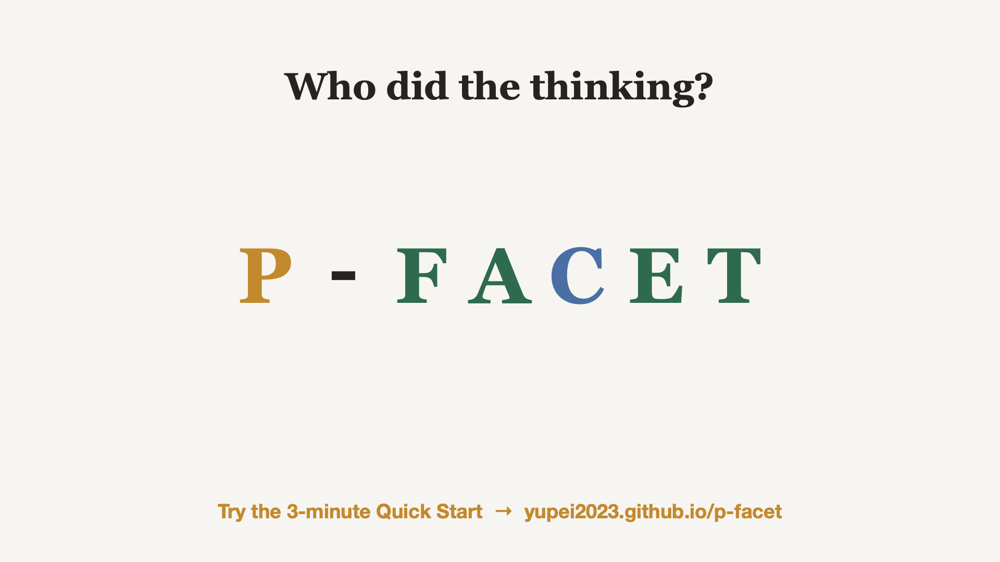

P-FACET / 流体力学
当 AI 帮助你时， 究竟是谁在思考？
P-FACET 是一套六阶段学习流程，帮助你在流体力学问题中使用 AI，同时把关键思考留给自己。 其中五个阶段由你主导。 AI 仅在一个阶段直接介入。
模型介绍视频
认识 P-FACET。
了解如何让关键思考由学习者完成，并让 AI 在明确的边界内提供支持。以下为英文原版视频。

3 分 44 秒 · 英文视频 · 在 YouTube 观看： youtu.be/TLA_h0yHC8c
音乐：Deliberate Thought，Kevin MacLeod（incompetech.com），CC BY 4.0
模型结构
六个阶段，一个循环。
P 位于中心； F-A-C-E-T 围绕问题循环展开。
P
以问题为中心的挑战 你
从真实问题出发：进行消火栓流量测试时，主管压力不得低于规定下限。
F
界定问题 你
明确合格答案的判据与约束。
A
类比与尝试 你
联系已有知识，先自己尝试，留下自己的初步方案。
C
咨询与建构 你 + AI
到这一步才引入 AI：请它检查你的尝试，而不是代替你解题。边界由你设定。
E
评价与解释 你
依据证据核查。接受、修正或拒绝，都要说明理由。仅说“我检查过了”还不够。
T
转化与迁移 你
用自己的方式重组答案，并把这套流程迁移到下一组问题。
C 是咨询入口，不是只能经过一次的时刻。 后续发现缺口时，可以回到 C 再咨询。
P ——问题始终位于中心。
三种认知任务外包
把工作交给工具并非坏事。需要警惕的是，把 本该通过练习学会的思考 也交了出去。
机械性外包
处理辅助事务，不代替本次学习的核心任务。
可以： “把这五个数值换算成 m³/s。”但如果本次练习的目标就是单位换算，就应自己完成。
支持性外包
帮助你改进已经做过的思考。
更合适： “这是我的建模过程。请指出错误，修改由我来做。”
替代性外包
让 AI 完成本应由你完成的关键思考。
有代价： “算出压力，告诉我测试能否进行，并列出全部步骤。”
动手实践
两种学习方式。
下次 AI 帮助你时，问自己一句： 究竟是谁完成了思考？